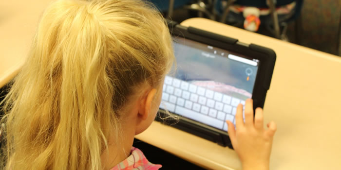

10 Consejos para un buen uso de Internet para padres y niños
Escrito el: 22/01/2021 por: Admin
nternet es uno de los grandes inventos del siglo XX, pues permite tal infinidad de posibilidades y beneficios para la sociedad que se ha convertido en una cuestión prácticamente indisociable de nuestro día a día. Ha cambiado incluso la manera de informarse, comunicarse y relacionarse entre las personas queremos ofrecer una serie de consejos para un buen uso de Internet